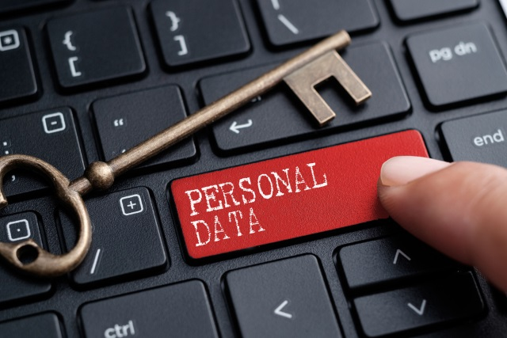

聊天机器人：道德与隐私问题
随着聊天机器人的商用普及，越来越多的人关注到使用聊天机器人可能涉及到的伦理和隐私安全问题。聊天机器人是一种通过机器学习和自然语言处理技术来模拟人类对话的计算机程序。由于聊天机器人通过与用户交流来学习，它们可能不仅会习得用户的言辞，也会习得用户的偏见。 有一个真实的案例可以佐证这一点，微软基于社交媒体的聊天机器人'Tay'，在不到十六个小时内从普通的少女变成展示反犹太主义、种族主义和性别歧视态度的聊天机器人。微软基于社交媒体的聊天机器人'Zo'也学到了一些冒犯性习惯。尽管设计者的意图是好的，但许多机器学习的语料库中有无法轻易消除的偏见。
另一方面，聊天机器人可以被预先偏置，并且可以被训练以影响公众舆论和话语。因此，社交聊天机器人开始在许多社交平台上运作，传播预先编程的信息。即使是推荐餐厅、航班、金融产品、药品等的聊天机器人助手也可以被预先编程来提供预先安排的产品。这为聊天机器人的创建者从“产品植入”中创造了额外的收入，但是值得深思的是聊天机器人全天候工作，人们极度信任和依赖它们。此外，聊天机器人旨在通过消息吸引用户的注意力，因为这是快速、简单且感觉像是一次真实的对话，同时使用有针对性的消息（精确的对话营销）来帮助或销售雇主的产品。
随着聊天机器人的设计技术不断提高，它们与人类对话的区别也越来越难以分辨。一些聊天机器人的语言水平甚至足以通过谈话帮助人们恢复心理健康。这些聊天机器人可以从用户那里获取有价值的信息，也可能会让用户变得更加容易受到其他聊天机器人的渗透和攻击。大型科技公司可以获得大量的对话数据，并有能力雇佣技术娴熟的程序员来不断改进聊天机器人的设计。这将使聊天机器人的对话更加接近于人类，使其更加可信。然而，这也可能使聊天机器人在社交媒体上更具影响力，从而影响人们的观点。
年度Loebner奖是世界上历史最悠久的图灵测试竞赛。在这个人工智能竞赛中，评审者认为最像人类的计算机程序将获胜。虽然没有任何聊天机器人曾获得过Loebner奖的金奖（回答不能与人类区分），但是一些聊天机器人已经得到了12位评委中3位认为它们是人类的高分。大型科技公司可以获得大量的对话数据并有能力雇用熟练的程序员。随着聊天机器人设计技术的不断改进，聊天机器人的语言将变得更加接近人类。这将使社交媒体上的聊天机器人更加可信，这样的聊天机器人甚至足以强烈影响人们的观点。
聊天机器人开始在许多领域占据主导地位，因为它们高效、全天候运行，并代表了一种令人愉悦的向计算机提供指令的方式。正如介绍中所提到的，聊天机器人不过是一个预设的输入输出系统，如何创建和操作聊天机器人的基本“配方”已知。使用聊天机器人需要承担巨大的责任和网络安全风险。在许多情况下，聊天机器人涉及“敏感信息”，应实施安全措施。与聊天机器人的通信通过已经实现的渠道和协议进行。在大多数情况下，通信不会出现尚未被发现和适当缓解的安全问题。但仍然，不是每个聊天机器人都通过加密通道进行通信，用户在聊天时不应发送任何个人数据。
一些安全问题涉及存储的通信和用户数据。问题在于通信非常有价值，许多公司都存储过去的通信。数据可以加密存储在服务器上，但是机器学习算法不能在加密数据上进行训练。结果是毫无意义的；此外，自然语言处理工具无法在加密数据上进行学习。这是通信被揭示并可以被读取的时刻之一。从总体上看，聊天机器人记录并学习以前的通信；他们会在之后与其他人交谈时重复使用对话中习得的单词、短语和完整语句。
另一个问题是，聊天机器人可以在第三方对话接口/网络上运行，如Facebook Messenger、Viber、Facebook WhatsApp、Twitter、Facebook、LinkedIn等。这些应用程序/网络的所有者在用户使用其服务时有不同的政策规定用户和公司之间的归属。例如，仅在2018年，Facebook就有超过30万个活跃聊天机器人，在人与企业之间交换了80亿条信息。这比2017年交换的消息数量多了四倍。这些和类似的公司评估来自聊天机器人的数据的价格。这不仅涉及使用以前的通信来训练聊天机器人的机器学习算法，还涉及cookie、用户偏好、不同群体的主要讨论话题、活动、语言、正/负消息以及可以从聊天机器人中提取并出售给其他客户的任何其他功能。Facebook WhatsApp 最近更改了其条款和隐私政策，将 WhatsApp 与其他 Facebook 公司联系起来，并使用从 WhatsApp的收集的信息。 这意味着商业消息可以用于商业目的，其中一些消息也存储在 Facebook 的服务器上。 正如本段开头提到的，许多业务消息都是由业务聊天机器人创建的。
当用户在流行的通讯平台上与聊天机器人交谈时，平台运营商会获取相关信息。例如，
WhatsApp存储的用户数据包括设备ID、用户ID、广告数据、购买历史记录、粗略位置、电话号码、电子邮件地址、联系人、产品互动、失败数据、性能数据、额外的诊断数据、付款信息、客户支持、其他用户内容等。
Facebook Messenger收集的信息则包括购买历史记录、额外的财务信息、精确位置、粗略位置、物理地址、电子邮件地址、姓名、电话号码、其他用户联系信息、联系人、照片或视频、游戏内容、其他用户内容、搜索历史记录、浏览历史记录、用户ID、设备ID、产品互动、广告数据、使用进一步信息、失败数据、性能数据、额外的诊断数据、其他类型的数据、健康、健身、付款信息、敏感信息、iMessages、搜索历史记录以及设备ID。
虽然现在可能还不会，但将来人们可能会通过文本被识别出来，就像神经网络识别了《亨利八世》中没有由威廉·莎士比亚写作的具体场景一样。来自许多来源的许多用户的数字足迹可以被收集并进行相似性比较。
目前已经有数千个聊天机器人连接到网页，在WhatsApp、Facebook、LinkedIn、Viber和其他通讯渠道上运行，有数百个聊天机器人有自己的应用程序，还有一些非常复杂的聊天机器人，如Cortana，同时在Cortana Intelligence Suite、Windows和许多其他设备上运行。比较所有公司的条款和隐私政策以及数据处理并不容易。而且人们通常点击同意但不阅读条款和条件。一些法规（如GDPR）由政府或其他机构制定，以控制和保护人们的个人数据，并给人们一定程度的信任。
基于安全通信的目的，录音并存储数据在许多情况下都是必需的。然而，与聊天机器人的通信大多存储在后端。通信和用户的数据是私人数据，应该存储以抵御潜在的安全威胁。历史对话记录对于聊天机器人开发商和公司来说非常有价值，因此大部分公司都会保存通讯记录。当客户打电话到热线时，交互式语音应答(IVR)会宣布“此通话可能会被监视或录音”。联系中心在欧盟和英国可以合法地记录和监视电话。在美国，法律因州而异，回答同样的“监视”在聊天机器人对话中发生，但是批准是隐藏在网站条款和条件和免责声明中的。公司使用存储的对话来分析他们的服务，并在可能的诉讼中进行保护。聊天机器人开发人员分析通信以更好地改进聊天机器人的质量，因为机器学习方法需要训练数据，并且模型的质量通常随着数据量的增加而提高。由于上述原因，大多数公司存储与聊天机器人的通信。根据GDPR的定义处理PII的公司必须采取特殊措施来安全存储数据；有关更多详细信息，请参见下面的文本。例如，银行使用自毁消息，但系统包含日志和账户余额记录。

GDPR的第32条(a)明确要求公司采取措施对个人数据进行假名化和加密。与聊天机器人的通信可以存储，但必须没有与给定用户和用户数据的连接，或者必须受到保护。在第一种情况下，数据库仅包含通信，并且可以与开发团队共享，除非它包含直接或间接识别个人的信息。公司使用正则表达式、模式匹配和实体识别方法来检测个人数据。另一方面，Cortana为了其正常功能需要收集大量关于其用户的数据：它可以访问联系人列表、已发送和接收电子邮件的概述、短信以及来电和去电。此外，它还跟踪用户的位置、他所说的话、他听什么音乐、他买什么、他看什么电影以及他在浏览器中做什么。然后将这些数据发送到运营商的服务器进行分析。因此，建议任何不打算使用个人助手功能的人应该在设备上关闭它。但是，即使在关闭 Cortana 之后，它收集的数据仍然存储在服务器上，Bing 在搜索用户请求时会返回给它。 这是另一方面，聊天机器人可以访问给定平台上的任何数据。 许多数据源的可访问性是公司聊天机器人的潜在安全风险； 用户控制和访问权限的配置是必须的。
问题更大的是开放域聊天机器人的情况，它们不像封闭域聊天机器人那样受到限制。 请注意，使用 PII 的封闭域聊天机器人需要身份验证和授权，并且用户同意条款和条件。 相反，用户可以与开放域聊天机器人讨论她/他喜欢的任何话题，但聊天机器人的提供者不鼓励人们谈论个人细节。 有人可以承认，免费的开放域聊天机器人主要是为了好玩，因为它们还不能就任何话题进行认真的讨论。 然而，社交机器人应用程序 Replika 允许您与 AI 成为朋友，然后人们可以分享他们的感受，而不仅仅是 GDPR 定义的 PII。所有公司都共享一些用户数据（给第三方跟踪和分析工具，如 Google Analytics54）和 cookie。 这有助于公司评估客户的类型。 聊天机器人大多托管在基于云的服务上，这些服务有自己的用户数据隐私政策。所有公司都可以阅读所有消息以改进他们的服务。 因此，根据定义，这不是私人聊天。 最后，许多聊天机器人可以托管在许多通信渠道上； 并且消息可以在另一台服务器上复制，例如，WhatsApp 数据存储在 Google Drive 上。目前，在 GooglePlay 和 AppStore 中有数百个聊天机器人应用程序，它们试图成为用户最好的朋友、医疗助手 ，外语老师聊天，女朋友/男朋友，甚至塔罗牌的甲骨文。 这是有潜在危险的，因为人们可以将他们的 PII 发送给匿名服务，或者可以从不可信的服务中获取错误信息； 所有这些服务都收集数据。因此，当涉及个人数据时，通信必须安全，聊天记录必须妥善处理。